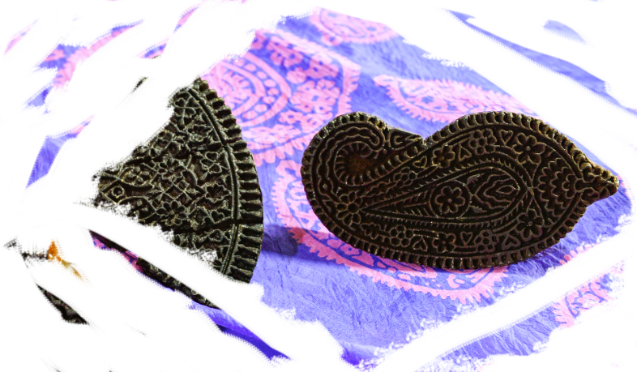
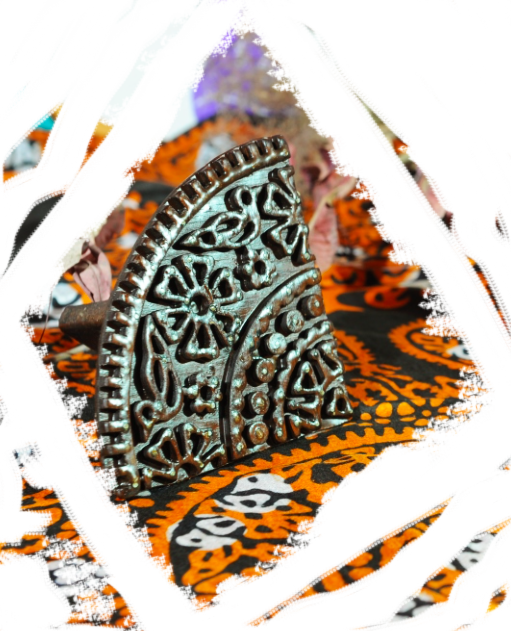

Buteh which tranlates inot English as Pailey is the main ornament of the head scarf. From Persian the ornament translates to a bush and is an important ornament of my culture, the English translation of the ornament is Paisley. Buteh can be seen in a lot of our garments, for example, if you pay attention to an oil painting of a Qajar shah you will find the ornament on his headwear, which is very close to my culture as the Qajar tribe of Iran end up forming the modern day Azerbaijan, and we are all mostly of Qajar decent. You can see a young, thin shah with his beautiful hat that has a golden buteh (possibly) on both sides of the headwear. Based on the texture of the paint and my knowledge of how national garments look in my country (as we wear them during our new year in Spring) that Buteh was most likely constructed out of golden coins (Mariam.. p72). However, Buteh was worn by everyone not only royalty.

Poor, and middle-class women also wore it a lot on their heads as almost every single headscarf, known in my country as Kalaghai, has these exact same motifs. To this day women of my country wear Kelaghai, I myself brought multiple from my country as it is almost impossible to find one here, and the country makes sure that people can only obtain them by visiting my city. It's considered a cultural treasure by UNESCO, and this silk headscarf makes Buteh their primary ornament, making it cultural and even religious (Traditional Art…).

Buteh in Kelaghai has many meanings and all are extremely valuable. According to UNESCO’s studies, this organic ornament can function as a code depending on the motif it is part of. For our culture, it could mean beauty and gracefulness of energy related to simply a peacock whose feathers’ ornaments resemble the evil eye of my culture making the bird a precious aspect of our art too. Buteh, more important, in many motifs, resembles a flame, and all our temples were built around small infinite fames resulting from gas that was coming from the earth, and to this day those Zoroastrian temples spread across the country. Just like those infinite flames, buteh is the most common symbol of infinity for us, which can also be seen as the continuity of energy of life and that is where we can see the religious aspect of this ornament. The infinite coming to life and death as all seen and read through this ornament. As the craftsman creating these scarfs explains to UNESCO’s editors, “one of the patterns, medakhil, has its own philosophy…a religious term that means: come just in time” which has to do with the passage of life and return to life (Traditional Art…). All can be read by studying the ornament buten along with other ornaments featured within or around it as part of a cultural and religious composition of my country’s art.
Main Source
Traditional art and symbolism of Kelaghayi, making and wearing women’s silk headscarves, UNESCO, video
https://www.youtube.com/watch?v=Z4u6o17FFL0